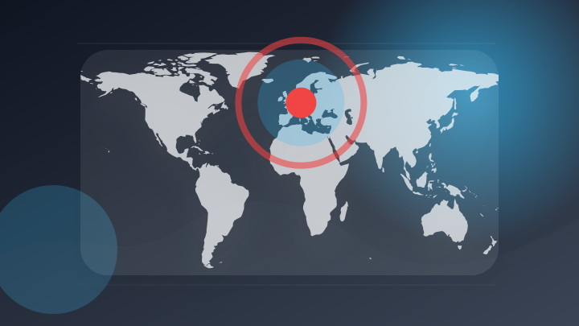
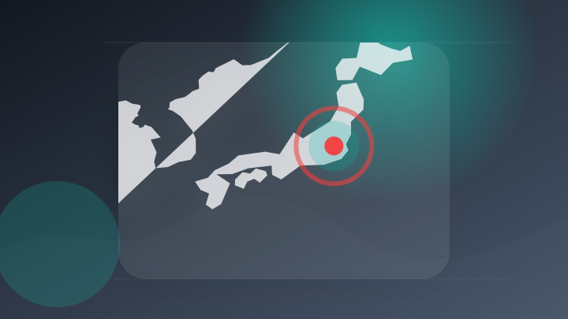
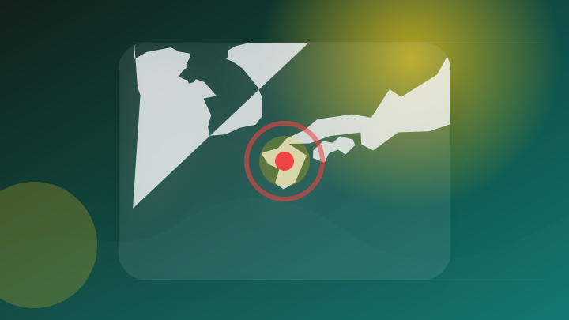
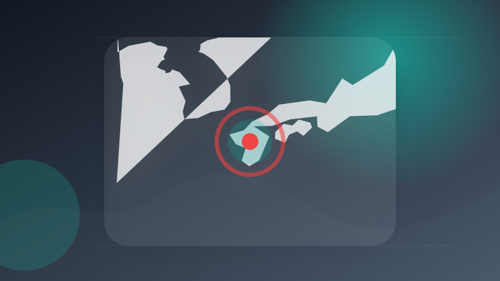
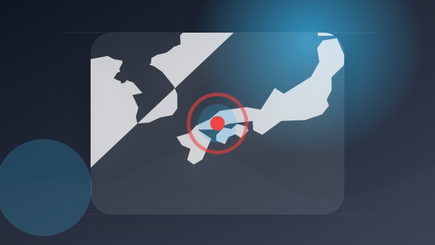
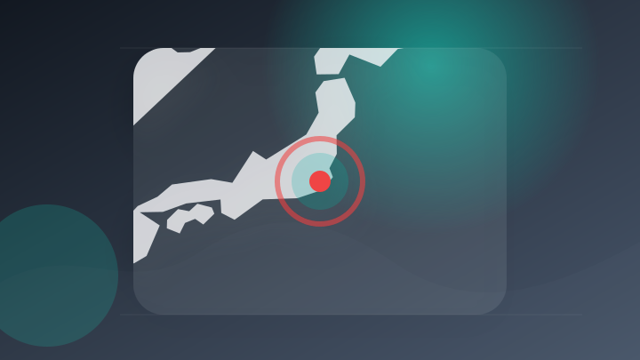
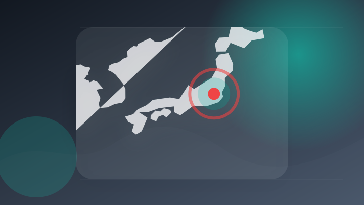
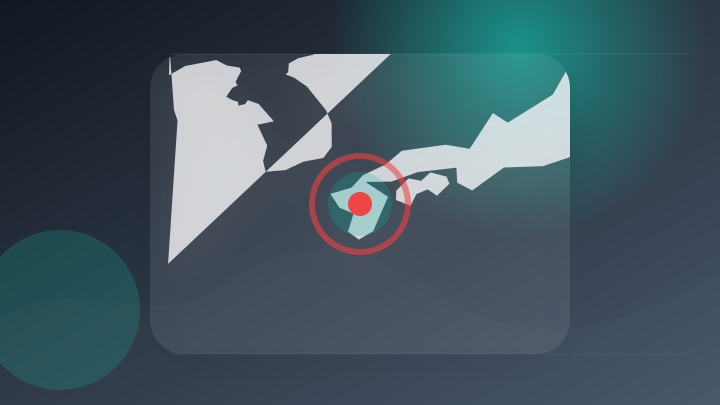
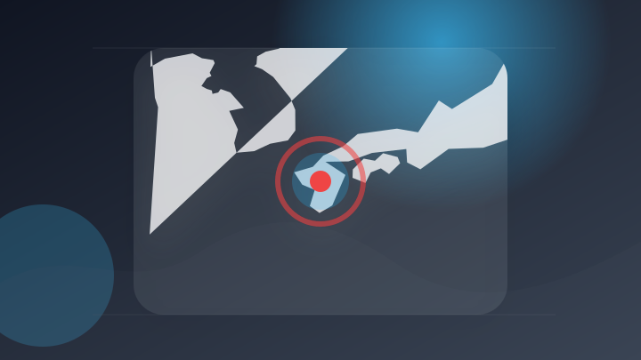
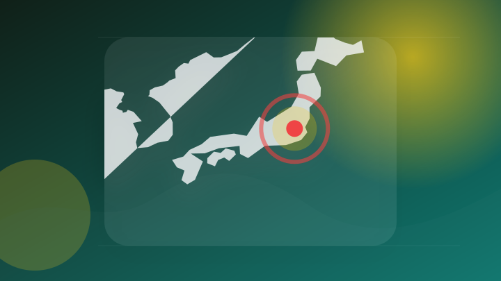

AI
6 topics

AIサービスで透明性確保 EU、規制法で義務化 偽の画像や動画のリスク減らす狙い
注目ポイント独立3媒体｜注目度 98点
偽の裸画像作られ学校に行けず…広がる被害、直接規制する法律なし [AIの時代]
注目ポイント注目度 70点
[FT]中国、AI･半導体技術の輸出規制強化を検討
注目ポイント注目度 70点
中国軍関連研究者、米国製AIを軍事モデル訓練に利用か｜モデル蒸留の規制課題
中国軍関連研究者、米国製AIを軍事モデル訓練に利用か
注目ポイント注目度 67点
生成AIデマは災害の二次被害になる 沖縄企業が情報発信で信頼を失わないために｜菅原崇文
注目ポイント注目度 67点
規制だけでは勝てない――米国AIエコシステムの覇権を左右する「オープンウェイト」の攻防
forbesjapan.c…
注目ポイント注目度 67点
IT業界
2 topics

Google、パーソナルAI「Gemini Spark」を日本でも利用可能に Chrome統合は米国から
注目ポイント注目度 64点
iPhoneやiPad、Macなどのリースプログラム「Apple Upgrade」が米国でスタート／Bluetooth LEの新規格「Bluetooth High Data Throughput」が明らかに：週末の「気になるニュース」一気読み！（1/3 ページ） - ITmedia PC USER
iPhoneやiPad、Macなどのリースプログラム「Apple Upgrade」が米国でスタート／Bluetoo…
注目ポイント注目度 64点
政治
6 topics
高市首相、3日に熊本へ 震度7の被災地を視察 避難所の訪問も [熊本県] [高市早苗首相 自民党総裁][2026年熊本地震]
高市首相、3日に熊本へ 震度7の被災地を視察 避難所の訪問も [熊本県] [高市早苗首相 自民党総裁][2026年…
注目ポイント注目度 100点

高市首相、３日に熊本視察 政府、「災害関連死」対策急ぐ
注目ポイント注目度 70点
高市首相 あす熊本地震の被災地訪問へ 政府発表
注目ポイント注目度 70点
韓国個人投資家、株価急落に激怒－SNSで政府に矛先、カジノに例えも
注目ポイント独立2媒体｜注目度 70点

高市早苗首相、3日に熊本地震の被災地視察へ 発災後初の現地入り
注目ポイント注目度 70点
付帯決議は否決「後」に採択された──副首都法案の時系列と「国会の意思」の読み方。そして同日選は？
注目ポイント注目度 67点
社会
6 topics
福井市の理容店で起きた強盗殺人未遂事件 散髪客の63歳無職男を逮捕 「殺すつもりはなかった」と容疑を一部否認
注目ポイント独立2媒体｜注目度 72点
イオンモール宇城で男性客死亡
注目ポイント注目度 67点

【事件】竹原の国道で酒を飲んで運転、容疑で東広島の会社員逮捕
注目ポイント注目度 67点
道内バイク事故 相次ぐ 標津ではトラックと衝突 男性が死亡 三笠市でも乗用車と衝突
注目ポイント注目度 67点
「ビール7杯くらい飲んだ」“危険運転致死”で自称飲食店経営の男を逮捕 バイクで自転車に追突し高齢男性が死亡 法改正後に県内初適用 福岡
「ビール7杯くらい飲んだ」“危険運転致死”で自称飲食店経営の男を逮捕 バイクで自転車に追突し高齢男性が死亡 法改正…
注目ポイント注目度 67点
広島県警の警察職員を逮捕、呉で酒酔い運転の疑い（中国新聞デジタル）
注目ポイント注目度 67点
事件・事故
6 topics
千葉・柏市で乗用車同士の事故 90代とみられる女性死亡、子ども含む7人けが
注目ポイント注目度 70点

千葉・柏で乗用車同士が衝突 高齢女性が死亡、子どもら計7人負傷 [千葉県]
注目ポイント注目度 70点
「いま言ったら楽になるぞ」16歳女性が取り調べで体調悪化し釈放後に死亡…遺族“違法な捜査が原因”と訴え提訴 自民・森参院議員が会見
「いま言ったら楽になるぞ」16歳女性が取り調べで体調悪化し釈放後に死亡…遺族“違法な捜査が原因”と訴え提訴 自民・…
注目ポイント注目度 70点

インドネシア沖でフェリー火災 5人死亡41人行方不明 日本で運航後に売却された船体
注目ポイント注目度 70点
体内アルコール濃度、7月施行の新基準値超えで事故 危険運転致傷容疑で61歳男逮捕 飾磨署|事件・事故
注目ポイント注目度 67点
前方車両に衝突してけが負わせた疑い、男逮捕 大田原署
注目ポイント注目度 67点
芸能人の結婚・離婚・交際
2 topics
災害
6 topics
週刊地震情報 2026.8.2 熊本県で10年ぶりに震度7 日奈久断層帯の活動
注目ポイント注目度 100点

熊本地震の災害ボランティア、続々スタート 社協のHPで事前登録を
注目ポイント注目度 70点

熊本地震の地表断層、専門家が現地調査 解析では周辺のひずみ変化
注目ポイント注目度 70点
北海道で最大震度3の地震 北海道・新ひだか町、浦河町、幕別町、浦幌町
注目ポイント注目度 70点

【台風情報】台風13号（ドルフィン）非常に強い勢力で西寄りへ進む 最大瞬間風速65m/s・中心気圧940hPaで4日（火）は小笠原、6日（木）には日本の南へ【雨と風のシミュレーション】
【台風情報】台風13号（ドルフィン）非常に強い勢力で西寄りへ進む 最大瞬間風速65m/s・中心気圧940hPaで4…
注目ポイント注目度 70点
熊本地震 被災地支援の募金に570万円の善意
注目ポイント注目度 67点
スポーツ
2 topics
ゲーム
3 topics
【8月発売PS5/PS4新作ゲーム】『ビースト・オブ・リンカネーション』『シュタゲ リブート』『メタルギアソリッド マスターコレクション Vol.2』など最新作を紹介！
【8月発売PS5/PS4新作ゲーム】『ビースト・オブ・リンカネーション』『シュタゲ リブート』『メタルギアソリッド…
注目ポイント注目度 64点
『パルワールド』カードゲーム、発売初日から高騰・品薄 転売屋が群がる“ポケカ現象”再来か（多根清史） - エキスパート
『パルワールド』カードゲーム、発売初日から高騰・品薄 転売屋が群がる“ポケカ現象”再来か（多根清史）
注目ポイント注目度 61点
今週発売の新作ゲーム『Beast of Reincarnation』『MARVEL Tōkon: Fighting Souls』『ファイナルファンタジーXIV』他
今週発売の新作ゲーム『Beast of Reincarnation』『MARVEL Tōkon: Fighting…
注目ポイント注目度 61点